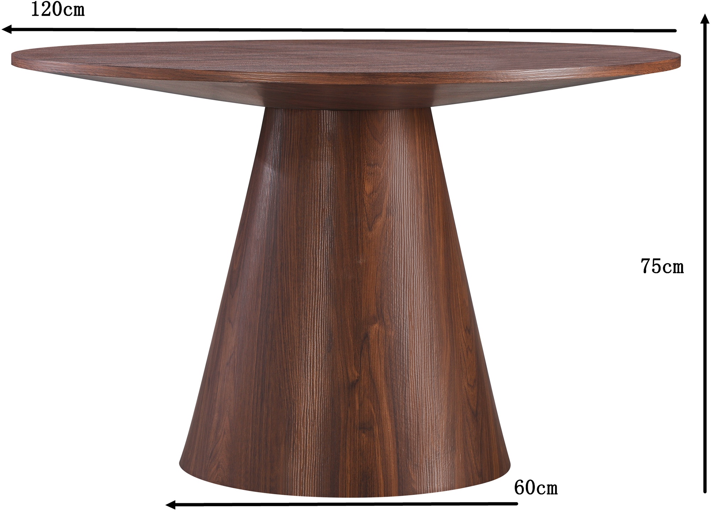
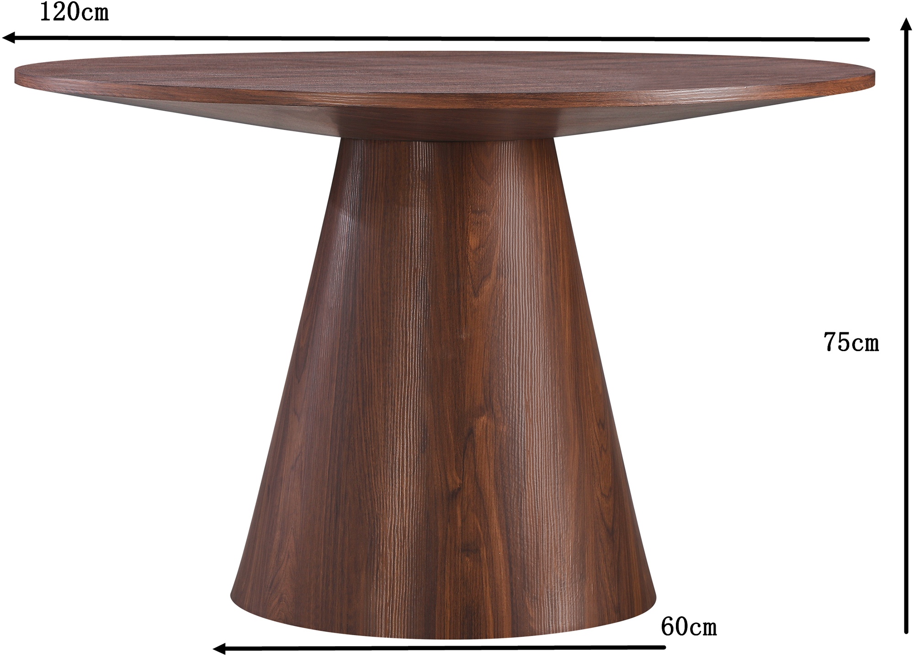

Islet dining table round 120 cm walnut
198066
 

Description
Discover the elegant Islet round dining table, 120 cm in diameter, crafted with a walnut-colored MDF tabletop and sturdy light gray legs. This table is a refined choice for those seeking a modern and versatile dining setting. Available in three tiers — Gold, Silver, and Bronze — it allows you to select the option that best fits your style and budget. Designed to complement various interior themes, the Islet table combines contemporary aesthetics with durable materials, making it a standout piece in any dining space. As part of the exclusive NEST & LIVING collection, it embodies quality and a timeless design.
Technical specifications
| Diameter | 120 cm |
|---|---|
| Material | MDF tabletop with paper finish, painted wooden legs |
| Color | Walnut (tabletop), Light Gray (legs) |
| Height | 75 cm |
| Weight capacity | Up to 50 kg |
| Tiers | Gold, Silver, Bronze (design and feature options) |